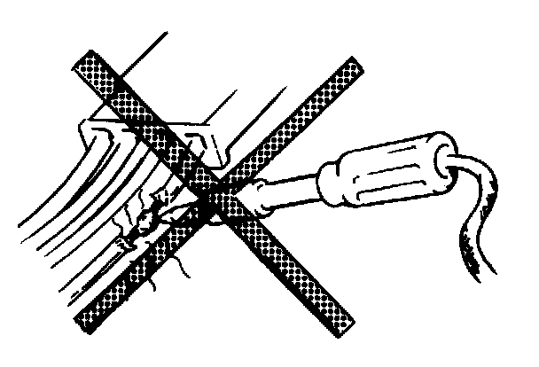
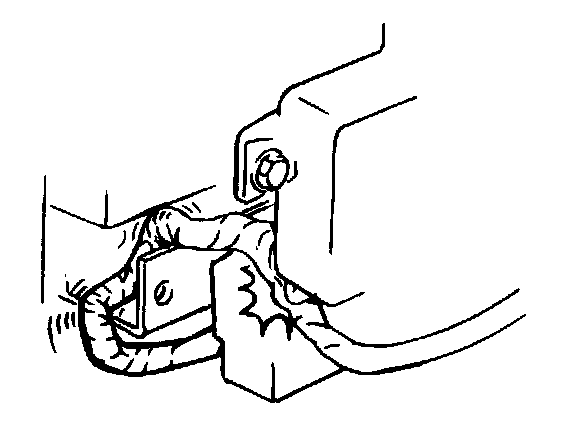
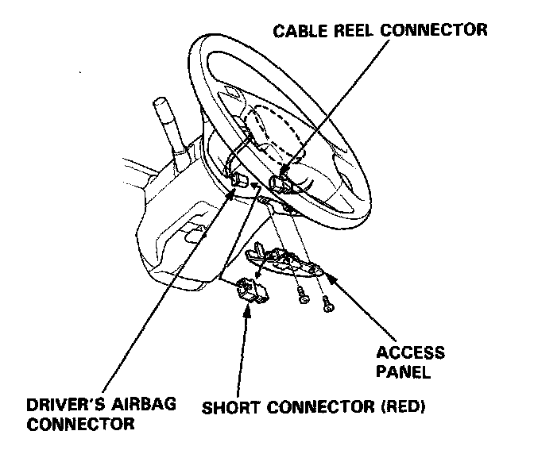
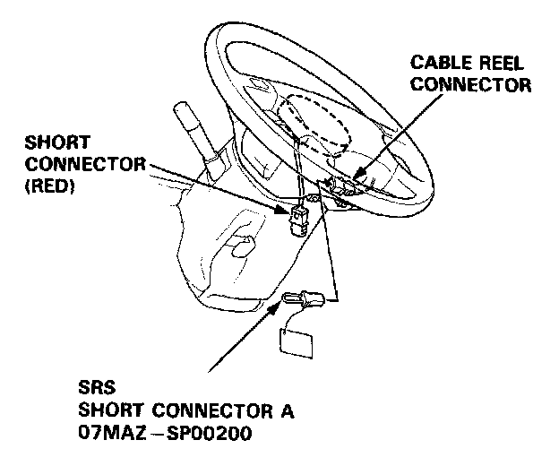
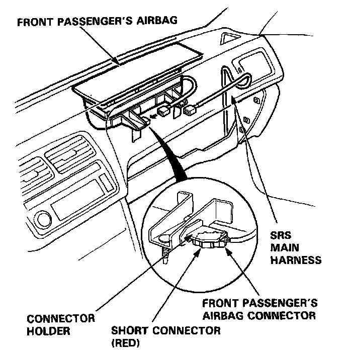
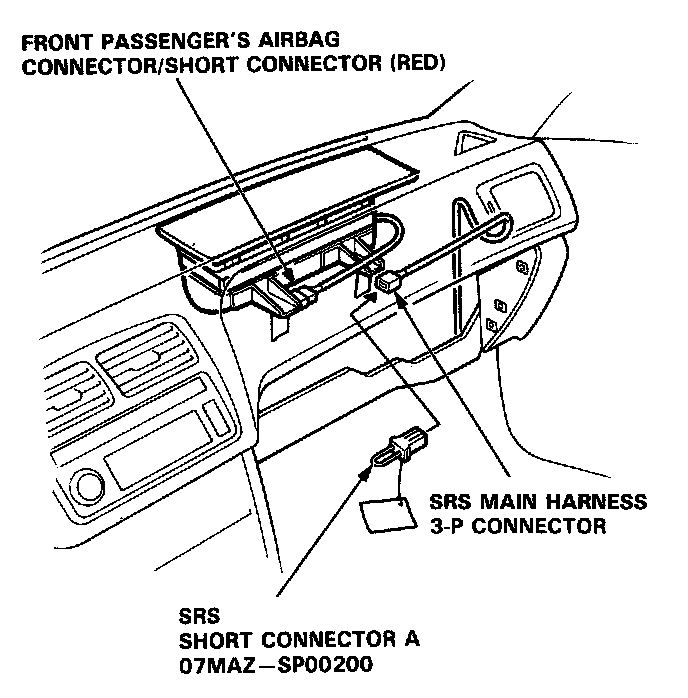
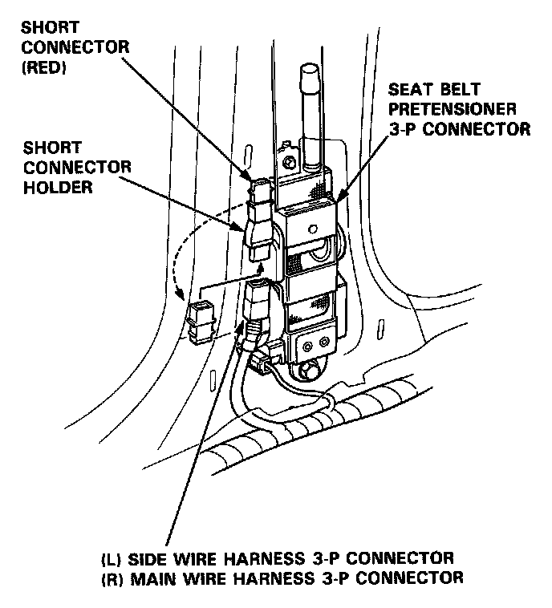
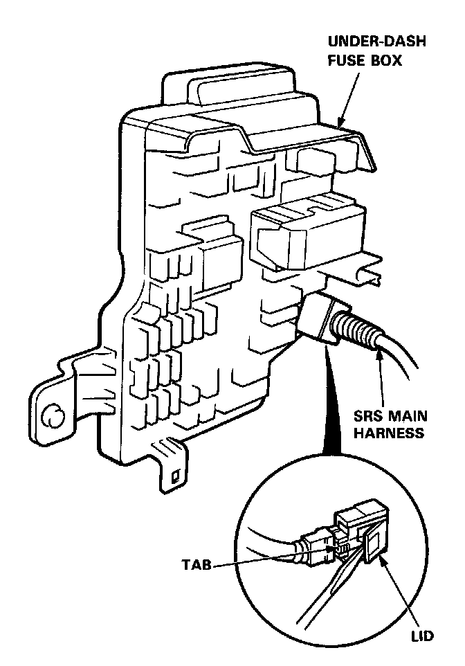

Wiring Precautions
Wiring Precautions
- Never attempt to modify, splice or repair SRS wiring.
NOTE: SRS wiring can be identified by special yellow outer protective covering.

- Be sure to install the harness wires so that they are not pinched or interfering with other car parts.

- Make sure all SRS ground locations are clean and all ground terminals are tightly fastened for optimum metal-to-metal contact. Poor grounding can cause intermittent problems that are difficult to diagnose.
- Install short connectors as follows whenever you are working near SRS wiring or components.
CAUTION: Before disconnecting the airbag connector, be sure to completely discharge the capacitor in the back-up circuit (by turning off the ignition switch and allowing 3 minutes to elapse) to prevent a malfunction of the seat belt pretensioners.
NOTE (L and LS models): Before disconnecting the battery cables, be sure you get the customer's anti-theft radio code number.
1. Disconnect the battery negative cable, then disconnect the positive cable.
2. Remove the access panel from the steering wheel, then remove the short connector (RED) from the panel.

3. Disconnect the connector between the airbag and the cable reel, then install the short connector (RED) on the airbag side of the connector.
4. Install SRS short connector A to the cable reel side of the connector.

5. Remove the glove box, then disconnect the connector between the front passenger's airbag and SRS main harness.
6. Install the short connector (RED) to the airbag side of the connector.

7. Install SRS short connector A to the SRS main harness side of the 3-P connector.

8. Remove the right "B" pillar trim panel.
9. Remove the short connector (RED) front he short connector holder.

10. Disconnect the seat belt pretensioner 3-P connector, then install the short connector (RED) to the pretensioner side of the connector.
11. Repeat steps 8, 9, and 10 on the left side.
12. After completing repair work, be sure to remove the short connectors and reconnect all SRS connectors.
- If you ever remove the under-dash fuse box or the SRS main harness, disconnect the SRS connector from the fuse box:
CAUTION: Avoid breaking the connector; it's double-locked
First lift the connector lid with a thin screwdriver, then press the connector tab down and pull the connector out.

To reinstall the connector, push it into position until it clicks, then close its lid.